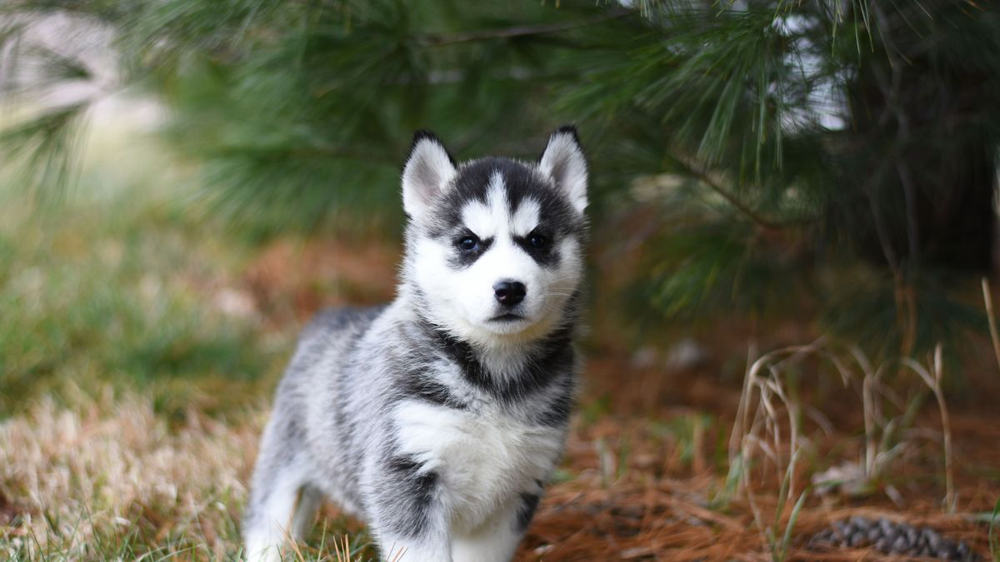

Tắm chó lớn (Golden, Husky, Samoyed, Alaska) tại Bình Thạnh: Bảng giá 2026 tới 25kg
Tắm các giống chó lớn lông kép tại nhà rất dễ để sót ẩm sát da gây hôi lông và viêm da ẩm (hot spot). Bảng giá 2026 mới nhất của Lumi Pet đã mở rộng minh bạch 8 mốc cân nặng lên tới 25kg.

Câu trả lời ngắn: Bảng giá tắm vệ sinh chó lớn (Golden, Husky, Samoyed) năm 2026 tại Lumi Pet Bình Thạnh (27 Võ Trường Toản, Phường Gia Định): 370.000đ (12–15kg), 430.000đ (15–18kg), 480.000đ (18–20kg) và 550.000đ (20–25kg). Chó trên 25kg báo giá riêng theo giống và độ dày lông.
1. Bảng giá Spa chó lớn 2026 (12kg – 25kg) tại Lumi Pet
| Cân nặng chó lớn | Tắm vệ sinh | Combo Tắm + Cạo | Combo Tắm + Cắt tỉa |
|---|---|---|---|
| 12 – 15kg | 370.000đ | 480.000đ | 600.000đ |
| 15 – 18kg | 430.000đ | 550.000đ | 680.000đ |
| 18 – 20kg | 480.000đ | 620.000đ | 760.000đ |
| 20 – 25kg | 550.000đ | 700.000đ | 850.000đ |
| Trên 25kg (Alaska, Golden lớn...) | Nhắn Zalo 0989 979 675 gửi ảnh & cân nặng để báo giá chính xác | ||
Đã bao gồm trọn bộ vệ sinh: cắt mài móng, vệ sinh tai, cạo lông đệm bàn chân/bụng/hậu môn, vắt tuyến hôi, tắm xả 2 lần và sấy tay khô tận gốc. Xem đầy đủ Bảng giá Spa 2026 (8 mốc chó).
2. Điều quan trọng nhất khi tắm Golden, Husky, Samoyed
Các giống chó cỡ lớn có lớp lông lót dày giữ nước cực lâu. Nếu tắm ở nhà dùng máy sấy gia đình yếu, lớp lông ngoài tưởng đã khô nhưng sát chân da vẫn còn ẩm — chỉ sau 2–3 ngày sẽ phát sinh mùi hôi ẩm nồng và mảng viêm da mưng mủ (hot spot).
- Máy sấy công suất chuyên dụng kết hợp sấy tay 100%: Thổi bung toàn bộ nước đọng và đẩy sạch lớp lông chết thay mùa mà không nhốt bé trong lồng sấy nóng.
- Kiểm tra kỹ vùng cổ, nách, bụng và gốc đuôi: Đây là 4 vị trí giữ ẩm lâu nhất ở Golden và Samoyed.
- Vắt tuyến hôi & cạo gọn kẽ đệm bàn chân: Giúp chó lớn chạy nhảy trong nhà không bị trơn trượt ảnh hưởng khớp háng.
3. Phụ thu minh bạch cho chó lông quá dày & cách đặt lịch
Với những bé Husky, Samoyed, Alaska đang vào mùa rụng lông dày hoặc bộ lông bông gấp đôi thông thường (tốn 2–3 tiếng sấy chải liên tục), bảng giá 2026 niêm yết rõ mục phụ thu lông quá dày, nhiều bông: 50.000đ – 150.000đ (nhân viên luôn kiểm tra trực tiếp và báo trước với chủ). Ba mẹ nuôi chó lớn nên đặt lịch trước 1 ngày để tiệm bố trí sẵn 2 nhân sự hỗ trợ bế tắm an toàn.
4. Câu hỏi thường gặp
Tắm chó Golden hoặc Husky 22kg tại Lumi Pet Bình Thạnh giá bao nhiêu?
Chó 22kg thuộc mốc 20–25kg: Tắm vệ sinh trọn gói 550.000đ. Nếu bộ lông quá dày nhiều bông cần chải xả lâu, phụ thu lông dày 50.000đ – 150.000đ (báo trước khi làm).
Chó Alaska 30kg Lumi Pet có nhận tắm không?
Có. Chó trên 25kg bạn vui lòng nhắn Zalo 0989 979 675 kèm ảnh và cân nặng của bé để tiệm báo giá và sắp xếp khung giờ có 2 thợ hỗ trợ.
Tắm một bé Samoyed hoặc Husky mất bao lâu?
Thường mất từ 90 đến 150 phút để chải xả lông rụng, tắm 2 lần và sấy tay khô hoàn toàn tận sát da.
Mùa nóng có nên cạo trọc lông cho Husky hoặc Samoyed không?
Không nên cạo sát da cho giống chó xứ lạnh có lông kép vì lớp lông giúp cách nhiệt và chống nắng. Nên tắm xả lông tơ định kỳ kết hợp tỉa gọn vùng bụng và bàn chân.
Đặt lịch chăm sóc nhẹ nhàng cho boss tại 27 Võ Trường Toản
Đặt lịch trước giúp tiệm chuẩn bị đúng thợ và khung giờ, tránh để bé chờ lâu. Bảng giá 2026 niêm yết minh bạch theo cân nặng.